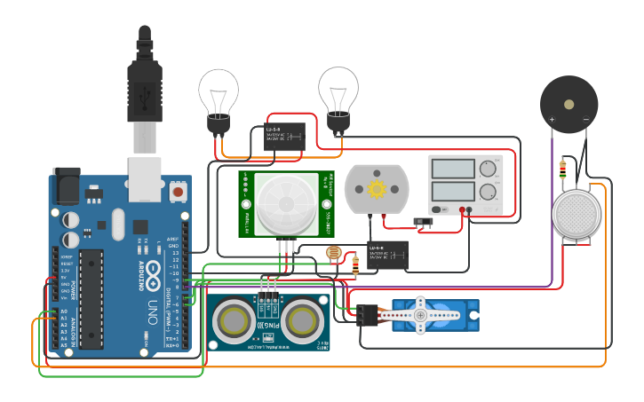

The Smart Home System was developed using an Arduino platform with various sensors and actuators to automate home functionalities such as light control, motion detection, gas detection, and door management. The system is controlled through sensors like LDR, PIR, gas, and ultrasonic sensors.
The system integrates the following features:
#include <Servo.h>
int output1Value = 0;
int sen1Value = 0;
int sen2Value = 0;
int const gas_sensor = A1;
int const LDR = A0;
int limit = 400;
long readUltrasonicDistance(int triggerPin, int echoPin)
{
pinMode(triggerPin, OUTPUT);
digitalWrite(triggerPin, LOW);
delayMicroseconds(2);
digitalWrite(triggerPin, HIGH);
delayMicroseconds(10);
digitalWrite(triggerPin, LOW);
pinMode(echoPin, INPUT);
return pulseIn(echoPin, HIGH);
}
Servo servo_7;
void setup()
{
Serial.begin(9600);
pinMode(A0, INPUT); //LDR
pinMode(A1,INPUT); //gas sensor
pinMode(13, OUTPUT); //connected to relay
servo_7.attach(7, 500, 2500); //servo motor
pinMode(8,OUTPUT); //signal to piezo buzzer
pinMode(9, INPUT); //signal to PIR
pinMode(10, OUTPUT); //signal to npn as switch
pinMode(4, OUTPUT); //Red LED
pinMode(3, OUTPUT); //Green LED
}
void loop()
{
//------light intensity control------//
int val1 = analogRead(LDR);
if (val1 > 500)
{
digitalWrite(13, LOW);
Serial.print("Bulb ON = ");
Serial.print(val1);
}
else
{
digitalWrite(13, HIGH);
Serial.print("Bulb OFF = ");
Serial.print(val1);
}
//------ light & fan control --------//
sen2Value = digitalRead(9);
if (sen2Value == 0)
{
digitalWrite(10, LOW); //npn as switch OFF
digitalWrite(4, HIGH); // Red LED ON, indicating no motion
digitalWrite(3, LOW); //Green LED OFF
Serial.print(" || NO Motion Detected ");
}
if (sen2Value == 1)
{
digitalWrite(10, HIGH);//npn as switch ON
delay(5000);
digitalWrite(4, LOW); // RED LED OFF
digitalWrite(3, HIGH);//GREEN LED ON, indicating motion detected
Serial.print(" || Motion Detected! ");
}
int val = analogRead(gas_sensor);
Serial.print("|| Gas Sensor Value = ");
Serial.print(val);
if (val > limit)
{
tone(8, 650);
}
delay(300);
noTone(8);
sen1Value = 0.01723 * readUltrasonicDistance(6, 6);
if (sen1Value < 100)
{
servo_7.write(90);
Serial.print(" || Door Open! ; Distance = ");
Serial.print(sen1Value);
}
else
{
servo_7.write(0);
Serial.print(" || Door Closed! ; Distance = ");
Serial.print(sen1Value);
}
delay(10);
}